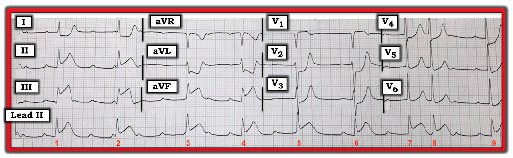
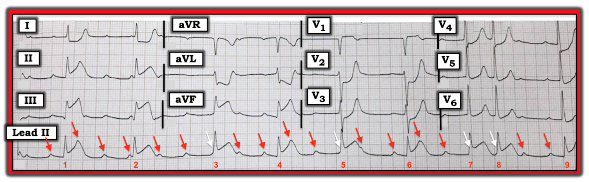
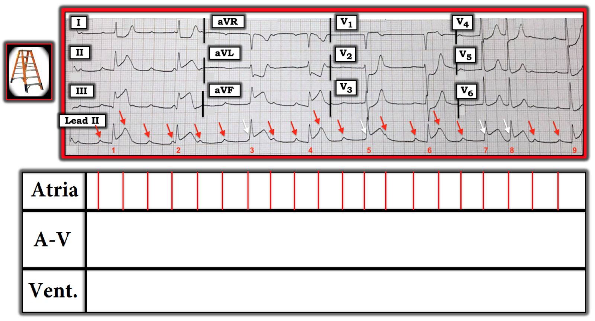
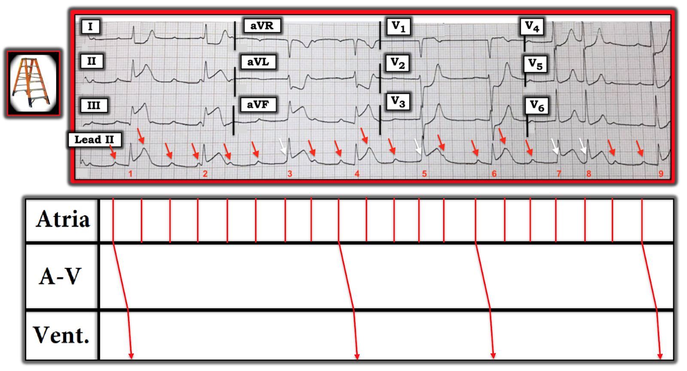
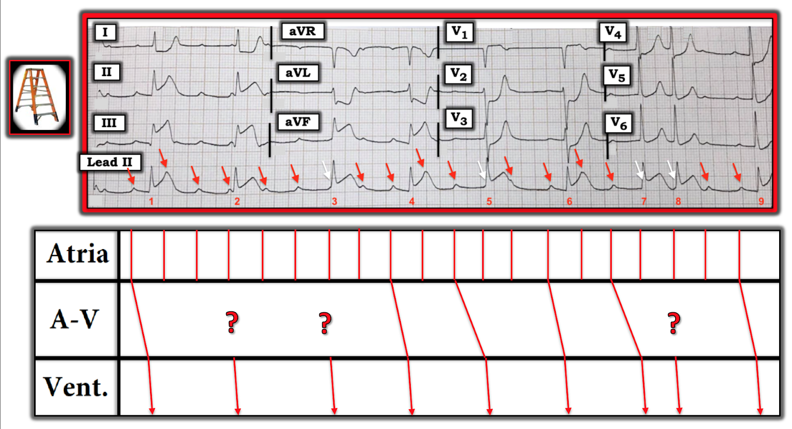
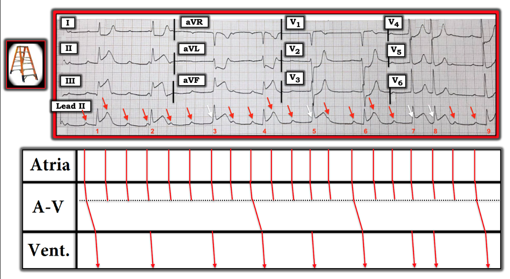
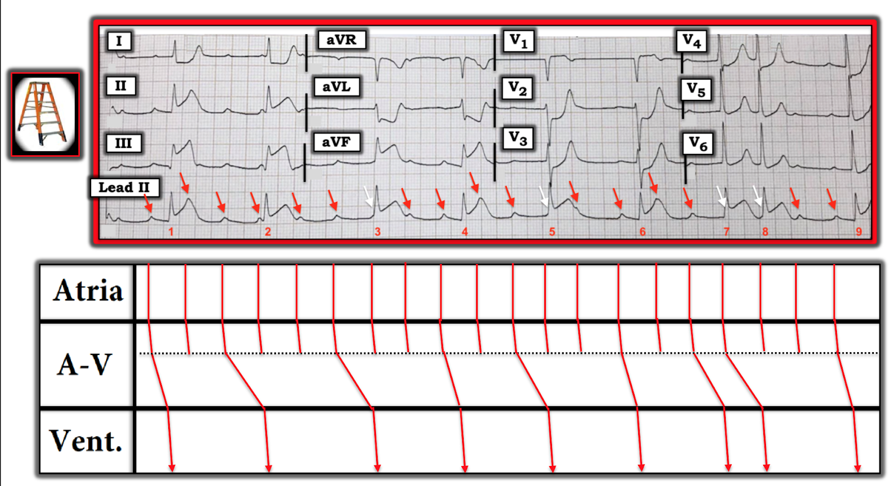
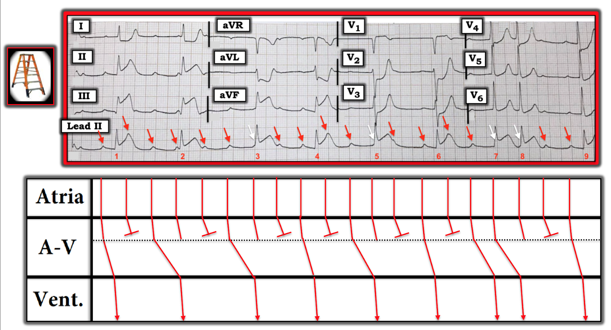
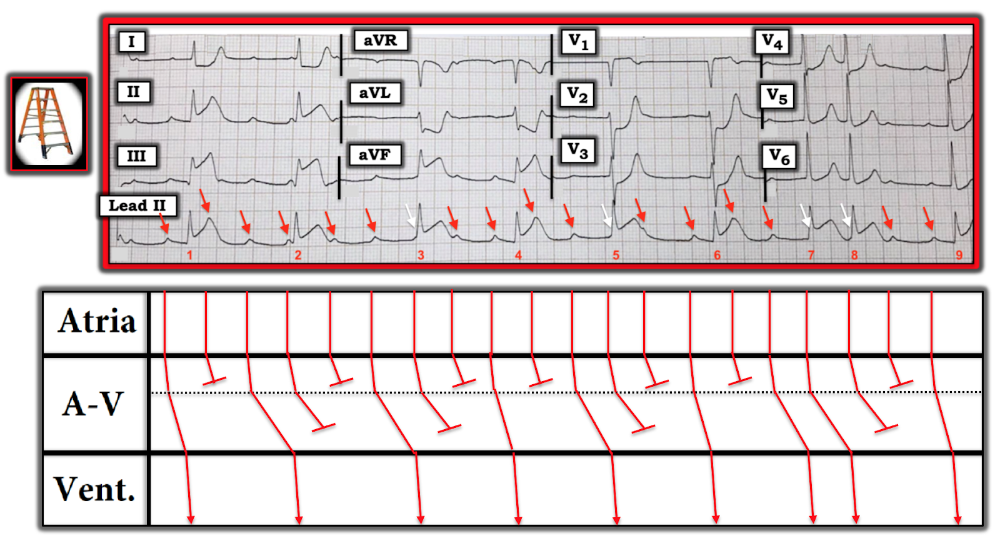

ECG Blog #168 (STEMI - Blốc AV phức tạp - Giản đồ bậc thang - Compa đo)
Điện tâm đồ trong Hình-1 được ghi từ một phụ nữ trung niên đến viện vì một cơn ngất và tụt huyết áp. Không đau ngực.
- Bạn sẽ đọc điện tâm đồ này như thế nào?
- Động mạch “thủ phạm” là gì?
- Nhịp là gì?
Thú nhận: Tôi vẫn chưa hoàn toàn chắc chắn về mọi điều đang diễn ra với nhịp tim trong bản ghi này. Dù vậy — một số nhận định về nhịp có thể được đưa ra một cách chắc chắn. Và, tôi có một giả thuyết …


BÌNH LUẬN: Đây là một bản ghi phức tạp! Như tôi đã thừa nhận hoàn toàn ở trên — tôi vẫn chưa chắc chắn về mọi khía cạnh của rối loạn nhịp này; các chi tiết tôi sẽ bàn thêm một chút sau. Tạm thời — chỉ cần nói rằng: i) Tất cả các nhát trên bản ghi này đều là nhát trên thất; ii) Có rất nhiều sóng P; iii) Một số sóng P trong đó trông như có thể đang dẫn truyền; và, iv) Dường như có một dạng blốc AV nào đó.
- ĐIỂM THEN CHỐT (PEARL) #1: Mặc dù rối loạn nhịp trong Hình-1 rất hấp dẫn (!) — Cần nhận ra rằng việc phân tích chi tiết hơn những gì tôi nêu ở i), ii), iii) và iv) phía trên là không cần thiết vào lúc này để khởi động những ưu tiên quan trọng nhất trong xử trí!
- Vì vậy — TỐT NHẤT là không tốn thêm thời gian cố giải mã nhịp này cho đến khi bạn đã hoàn tất Cách tiếp cận hệ thống để đánh giá hình dạng QRS và sóng ST-T!
Phân tích mô tả điện tâm đồ trong Hình-1 (Descriptive Analysis): Tập trung chú ý vào hình dạng QRS trên bản ghi 12 chuyển đạo — có lý do RẤT RÕ để người phụ nữ này đến viện vì ngất và tụt huyết áp!
- Tần số & Nhịp — Nhịp nhanh xoang kèm những gì có vẻ là một dạng blốc AV phức tạp nào đó (Chi tiết ngay sau đây! ).
- Các khoảng — Khoảng PR thay đổi (Xem bên dưới). Phức bộ QRS của mọi nhát trên bản ghi này đều hẹp. Khoảng QTc có vẻ bình thường.
- Trục — Trục QRS trung bình bình thường (khoảng +70 độ).
- Lớn các buồng tim — Không có.
Tiếp theo xem xét Thay đổi Q-R-S-T:
- Sóng Q — Có một sóng Q nhỏ nhưng khá rộng ở chuyển đạo III. Một trong 2 phức bộ ở chuyển đạo aVF dường như có sóng Q nhỏ.
- Tăng tiến sóng R — Vùng chuyển tiếp xảy ra bình thường (ở đây, giữa các chuyển đạo V3 đến V4).
Về Thay đổi sóng ST-T:
- Có ST chênh lên tối cấp ở từng chuyển đạo thành dưới! ST chênh lên rõ ràng nhiều hơn ở chuyển đạo III so với chuyển đạo II. Có thể đã bắt đầu có sóng T đảo ngược ở chuyển đạo III, nhưng chưa có ở các chuyển đạo thành dưới khác.
- Có ST chênh xuống dạng hình ảnh soi gương (reciprocal) ở chuyển đạo aVL khi so sánh với hình dạng của ST chênh lên ở chuyển đạo III. Ở mức độ ít hơn — cũng có ST-T chênh xuống soi gương ở chuyển đạo I. ĐIỂM THEN CHỐT (PEARL) #2: Như chúng ta đã bàn trong các ECG Blog trước (gần đây nhất là trong ECG Blog#167) — có một mối quan hệ hình ảnh soi gương gần như “kỳ diệu” giữa chuyển đạo III và aVL trong nhiều (phần lớn) trường hợp nhồi máu cơ tim thành dưới cấp.
- Ngoài ra — có ST chênh xuống rõ rệt, đi lên thành sóng T tối cấp ở các chuyển đạo V2, V3 và V4.
- Đáng ngạc nhiên — có ST chênh lên nhẹ nhưng thật sự ở chuyển đạo V1 (thông thường không có ST chênh lên ở chuyển đạo V1).
Tổng hợp lại tất cả: Hình dạng QRS của điện tâm đồ trong Hình-1 cho phép chẩn đoán STEMI dưới-sau cấp. Lưu ý những điểm sau:
- Tổn thương thành sau cấp được chẩn đoán dựa vào sự hiện diện của ST chênh xuống bất thường ở các chuyển đạo trước. Các chuyển đạo trước cho thấy “hình ảnh soi gương” của những gì ta dự kiến thấy ở các chuyển đạo sau (như các chuyển đạo V7, V8, V9). Chẳng phải ST chênh xuống “dạng bậc thềm” đi lên thành sóng T nổi bật ở chuyển đạo V2 gần như chính là hình ảnh soi gương của ST chênh lên + sóng T đảo ngược dự kiến có trong nhồi máu cơ tim cấp sao? (Xem ECG Blog #80 về cách áp dụng “nghiệm pháp soi gương” (mirror test) để chẩn đoán nhồi máu cơ tim thành sau).
- Động mạch “thủ phạm” (Xem ECG Blog #80) — gần như chắc chắn là tắc RCA (Right Coronary Artery — động mạch vành phải) cấp vì: i) Thống kê (~85% bệnh nhân có hệ vành ưu thế phải — nên so với tắc LCx [Left Circumflex — động mạch mũ trái], tắc RCA cấp có khả năng là nguyên nhân gây nhồi máu cơ tim thành dưới cao hơn nhiều); ii) ST chênh lên ở chuyển đạo III > chuyển đạo II; iii) có ST chênh xuống soi gương rõ ở chuyển đạo aVL; và, iv) không có dấu hiệu nhồi máu thành bên kèm theo (tức là không có ST chênh lên ở bất kỳ chuyển đạo thành bên nào).
- LƯU Ý: Ngoài việc là một chuyển đạo trước — chuyển đạo V1 còn là một chuyển đạo bên phải. Dấu hiệu không dự kiến là ST chênh lên ở chuyển đạo V1 cho ta biết rằng ngoài STEMI dưới-sau cấp — còn có tổn thương RV (Right Ventricular — thất phải) cấp.
- ĐIỂM THEN CHỐT (PEARL) #3: Phần lớn trường hợp, cần đến chuyển đạo bên phải để chẩn đoán nhồi máu cơ tim thất phải (RV MI) cấp. Tuy nhiên, khi có ST chênh lên chắc chắn ở chuyển đạo V1 ở bệnh nhân nhồi máu cơ tim thành dưới cấp — điều này gần như chắc chắn cho thấy ST chênh lên do nhồi máu thất phải cấp đã triệt tiêu ST chênh xuống lẽ ra bạn sẽ thấy ở chuyển đạo V1 do nhồi máu thành sau đang diễn ra.
- Việc nhận ra nhồi máu thất phải cấp đi kèm nhồi máu cơ tim dưới-sau cấp giúp khu trú động mạch “thủ phạm” ở RCA — vì LCx không cấp máu cho thất phải. Điều này càng khẳng định RCA đoạn gần là động mạch “thủ phạm” trong Hình-1.
- THEO DÕI: Thông tim xác nhận tắc cấp RCA đoạn gần — và tái tưới máu đạt được bằng đặt stent mạch máu này. Có lẽ mức độ blốc AV đã cải thiện khi bệnh nhân hồi phục (dù tôi không được biết các chi tiết đó).
Mục đích của tôi — khi trình bày ca này gồm 3 điều: i) Ca này là một ví dụ tuyệt vời về cách nhận ra OMI (nhồi máu cơ tim do tắc — Occlusion-related Myocardial Infarction) cấp ở bệnh nhân không đau ngực — bất chấp sự phân tâm do có một dạng blốc AV phức tạp; ii) Cách đánh giá một dạng blốc AV phức tạp, như thấy rõ trong Hình-1; — và, iii) Việc sử dụng giản đồ bậc thang (laddergram) có thể hỗ trợ đánh giá này như thế nào.
- Như tôi đã nhấn mạnh — đánh giá chi tiết nhịp này là không thiết yếu để khởi động các ưu tiên then chốt trong xử trí. Tôi sẽ RẤT VUI — nếu bạn chỉ đơn giản nhận ra có một dạng blốc AV phức tạp — và, rằng nguyên nhân của rối loạn nhịp này cũng như tình trạng ngất/tụt huyết áp của bệnh nhân là OMI cấp cần thông tim + tái tưới máu ngay lập tức.
- ĐIỂM THEN CHỐT (PEARL) #4: Thậm chí đừng mất công cố đánh giá nhịp này trừ khi bạn dùng một chiếc compa đo (calipers). Theo tôi — gần như không thể đánh giá một nhịp phức tạp như nhịp này mà không có compa đo. Người bác sĩ tim mạch cố đánh giá các rối loạn nhịp phức tạp mà không dùng compa đo — là người bác sĩ tim mạch sẽ bỏ sót chẩn đoán của nhiều nhịp phức tạp.
Xem xét nhịp kỹ hơn: Dù phải thừa nhận là chưa chắc chắn về mọi khía cạnh của nhịp trong Hình-1 — vẫn có một số Nhận xét mà chúng ta có thể đưa ra:
- Nhịp là nhịp trên thất — vì mọi phức bộ QRS trên bản ghi này đều hẹp.
- Dùng compa đo — Chúng ta có thể nói rằng có sóng P xoang (các mũi tên ĐỎ trên dải nhịp chuyển đạo II dài trong Hình-2). Nhịp xoang này nhanh (tức là nhịp nhanh xoang) — và khá (nhưng không hoàn toàn) đều. Vì khó có chuyện “bỏ sót” thỉnh thoảng một sóng P — tôi đã thêm các mũi tên TRẮNG vào Hình-2 ở những chỗ tôi nghi ngờ có thêm sóng P xoang (bị che khuất một phần hoặc hoàn toàn bởi phức bộ QRS xảy ra đồng thời).
- Ngoài loạn nhịp xoang — còn có một hiện tượng được gọi là loạn nhịp xoang theo pha thất (ventriculophasic) — trong đó nhịp chậm nặng do blốc AV có thể gây ra sự thay đổi khoảng P-P. Khi điều này xảy ra — khoảng P-P “kẹp” một phức bộ QRS có xu hướng ngắn hơn các khoảng P-P không chứa phức bộ QRS (được cho là do tưới máu tốt hơn sau co bóp tim xảy ra ngay sau một QRS). Dùng compa đo xác nhận có loạn nhịp xoang theo pha thất trong Hình-2.
- Có một số sóng P xảy ra liên tiếp trong Hình-2 mà không có phức bộ QRS theo sau. Điều này gợi ý rằng ít nhất thì — có blốc AV mức độ cao trên bản ghi này (mà tôi định nghĩa là blốc AV trong đó nhiều hơn một sóng P xoang liên tiếp không dẫn truyền dù có đủ cơ hội để dẫn truyền).
- Nhịp thất không đều! Điều này gợi ý blốc AV hoàn toàn (độ 3) là không có khả năng — vì nhịp thoát thất thường ít nhất là khá đều khi blốc AV hoàn toàn. Điều này xác định nhịp trong Hình-2 là blốc AV độ 2 mức độ cao.
ĐIỂM THEN CHỐT (PEARL) — Điều thường gặp thì thường gặp! Khi có nhồi máu cơ tim thành dưới cấp (như bệnh nhân này) — Wenckebach AV cho đến nay (!!!) là loại blốc AV độ 2 thường gặp nhất.
- Vì vậy — mỗi khi tôi thấy STEMI thành dưới cấp với nhịp xoang nhanh nhưng không đều có các khoảng ngưng từng lúc — tôi đặc biệt tìm dẫn truyền Wenckebach. Theo kinh nghiệm của tôi — đây hầu như luôn luôn hóa ra là nguyên nhân gây ra sự không đều! (Xem một ví dụ về điều này tại ECG Blog #55).


Có dẫn truyền nào trong Hình-2 không?
Như tôi đã nói ngay từ đầu — đây là một nhịp phức tạp! Chúng ta đã xác định rằng có blốc AV độ 2 mức độ cao với nhiều sóng P không dẫn truyền. Bước tiếp theo để xác định chi tiết của nhịp này là xác định XEM có dẫn truyền nào không? Điều này tốt nhất được thực hiện bằng cách dùng giản đồ bậc thang (Hình-3):
- LƯU Ý: Mặc dù học cách vẽ giản đồ bậc thang là một thử thách (đúng là tôi đã mất nhiều năm mới thấy thoải mái khi vẽ! ) — học cách đọc giản đồ bậc thang lại dễ và trực quan! (NẾU bạn muốn Ôn lại cách dùng giản đồ bậc thang — Xem ECG Blog #69 và Blog #164).
- Bước 1 khi vẽ giản đồ bậc thang là điền vào Tầng Nhĩ tại những chỗ bạn thấy sóng P (Hình-3). Vì dẫn truyền xung điện qua tâm nhĩ nhanh (đi qua các bó dẫn truyền nhĩ chuyên biệt) — chúng ta biểu diễn dẫn truyền nhĩ trên giản đồ bậc thang bằng một đường thẳng đứng xuyên qua Tầng Nhĩ.


ĐIỂM THEN CHỐT (PEARL) #5: Bạn sẽ ngạc nhiên khi thấy việc nhận ra mối liên hệ (hoặc sự thiếu liên hệ) giữa sóng P và các phức bộ QRS lân cận trở nên DỄ HƠN đến mức nào ngay khi bạn đánh dấu các sóng P (các mũi tên ĐỎ trong Hình-4).
- Cách DỄ NHẤT để xác định XEM có dẫn truyền nào trong nhịp bạn đang đánh giá hay không — là xem LIỆU có khoảng PR giống hệt nhau nào không?
- LƯU Ý — Các khoảng PR đứng trước các nhát #1, 4, 6 và 9 đều giống hệt nhau. Điều này cho ta biết 4 nhát này chắc chắn phải được dẫn truyền. Hình-4 cho thấy cách chúng ta biểu diễn dẫn truyền qua nút AV và qua tâm thất cho 4 nhát này. Lý do đường dẫn truyền qua Tầng Nút AV nghiêng nhiều hơn (tức là góc nghiêng lớn hơn) so với dẫn truyền qua Tâm nhĩ và qua Tâm thất — là vì xung điện dẫn truyền chậm nhất khi đi qua nút AV.


Có nhát nào khác được dẫn truyền trong Hình-4 không?
Tiếp tục với nguyên tắc MẤU CHỐT là các khoảng PR giống hệt nhau thì khó do ngẫu nhiên — Tiếp theo chúng ta xem Hình-4 để xem LIỆU có thời khoảng PR nào khác lặp lại không.
- Đo bằng compa, khoảng PR đứng trước các nhát #5 và #7 giống hệt nhau. Điều này gợi ý mạnh mẽ rằng 2 nhát này cũng được dẫn truyền, dù với khoảng PR dài hơn so với các nhát #1,4, 6 và 9. Chúng tôi minh họa điều này trong Hình-5.
- Như vậy chúng ta còn chưa chắc chắn về các nhát #2, 3 và 8 (các DẤU CHẤM HỎI trong Hình-5).


ĐIỂM THEN CHỐT (PEARL) #6: Khoảng R-R dài nhất trên dải nhịp này nằm giữa các nhát #2-3. Khi xử lý một rối loạn dẫn truyền phức tạp — việc khoảng R-R ngắn lại một cách không dự kiến thường cho bạn biết rằng các nhát đến sớm hơn dự kiến đang được dẫn truyền!
- Tôi không biết liệu nhát #3 — nhát kết thúc khoảng R-R dài nhất — là nhát thoát bộ nối hay là nhát dẫn truyền từ xoang. Chúng ta không thể biết chắc điều này nếu không theo dõi thêm …
- Tuy nhiên — Vì các nhát #2 và #8 trong Hình-5 đều đứng sau một khoảng R-R ngắn hơn khoảng R-R giữa các nhát #2-3 — tôi nghi ngờ các nhát #2 và #8 có lẽ đang được dẫn truyền!
Vậy thì Cơ chế của nhịp là gì?
Đến lúc này — phải thừa nhận là tôi không chắc nên vẽ các đường biểu diễn dẫn truyền của các nhát #2 và 8 (và có thể cả nhát #3) như thế nào.
- Sau khi suy ngẫm về rối loạn nhịp này lâu hơn mức tôi muốn thừa nhận … — tôi quyết định rằng mình cần suy nghĩ “vượt ra ngoài khuôn khổ”. (Tôi đã nói nhịp này phức tạp mà … ).
- LƯU Ý — Một số dạng Wenckebach AV có thể biểu hiện dẫn truyền Wenckebach ở nhiều tầng bên trong nút AV.
NẾU có 2 tầng blốc bên trong nút AV thì sao?
Cách TỐT NHẤT để minh họa khái niệm blốc hai tầng bên trong nút AV — là bấm lần lượt vào ảnh phóng to của 5 Hình tiếp theo. Chú thích của các Hình này mô tả cách tôi giải quyết vấn đề bằng giản đồ bậc thang.









ĐIỀU CỐT LÕI: Câu nói tôi yêu thích nhất về các rối loạn nhịp phức tạp là của Rosenbaum: “Mọi rối loạn nhịp có lòng tự trọng đều có ít nhất 3 cách giải thích khả dĩ”. Dù tôi không thể chứng minh rằng cách giải thích của tôi về rối loạn nhịp phức tạp này là cách duy nhất đúng — NẾU bạn dựng được một giản đồ bậc thang hợp lý (như tôi đã làm trong Hình-10) — thì giả thuyết của tôi đủ tư cách là ít nhất một cơ chế khả dĩ cho nhịp phức tạp này. Hoan nghênh các giả thuyết khác từ bất kỳ ai đọc blog này!
- Xin nhấn mạnh — Việc tìm ra một cơ chế chính xác cho rối loạn nhịp phức tạp này (như tôi đề xuất trong Hình-10) — không quan trọng bằng các Điều cần nhớ khác từ ca này!
- ĐIỀU CẦN NHỚ từ ca này: Điều quan trọng nhất cần nắm được từ ca này là: i) Mặc dù bệnh nhân này không đau ngực — bà đã có những triệu chứng khác (tức là ngất; tụt huyết áp) có thể phù hợp với nhồi máu cơ tim cấp; ii) Nhịp là nhịp trên thất — với rất nhiều sóng P xoang, một số được dẫn truyền — và số khác thì không được dẫn truyền. Vì vậy, nhịp này thể hiện một dạng blốc AV độ 2 nào đó; iii) Hình dạng QRS cho phép chẩn đoán STEMI cấp. Các ưu tiên xử trí bao gồm kích hoạt nhanh phòng thông tim (cath lab) nhằm đạt được tái tưới máu mạch vành kịp thời; iv) Vì bệnh nhân này có nhồi máu cơ tim thành dưới cấp — và, có blốc AV độ 2 với nhịp theo nhóm và phức bộ QRS hẹp — xét về thống kê (tức là khả năng trên 90%), cơ chế của blốc AV này gần như chắc chắn là một dạng Wenckebach AV (Mobitz I) nào đó; và, v) Nhiều khả năng là NẾU bạn đạt được tái tưới máu mạch vành nhanh chóng (đây phải là ưu tiên cao nhất của bạn) — thì dạng Wenckebach AV rất phức tạp này sẽ cải thiện, nếu không muốn nói là hết hoàn toàn.
-------------------------------------------------------------------------
Lời cảm ơn: Tôi xin cảm ơn Wai Shein (đến từ Myanmar) về ca bệnh và bản ghi này.
-------------------------------------------------------------------------